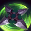
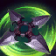

La asesina furtiva
Tras renunciar a la Orden Kinkou y a su título como el Puño de la Sombra, Akali pelea a solas, lista para ser el arma letal que su pueblo necesita. Aunque conserva todo lo que aprendió de su maestro Shen, juró defender a Jonia de sus enemigos... una víctima a la vez. Puede que Akali ataque en silencio, pero su mensaje resonará con fuerza y claridad: témanle a la asesina sin maestro.

Historia
La historia de Akali es la de una joven que se enfrenta a su destino y a la tradición para forjar su propio camino. Aunque nació en la próspera familia de los Kinkou, Akali se sintió atraída por la disciplina de la lucha y la magia de la sombra. A pesar de que su madre intentó disuadirla, Akali abandonó la Orden y se convirtió en la asesina que conocemos hoy en día. Aunque Akali no tiene maestro, sigue siendo una de las campeonas más letales de Runaterra.


 


Click para conocer as sobre cada habilidad
Runas
Selecciona un conjunto de runas
Skins disponibles